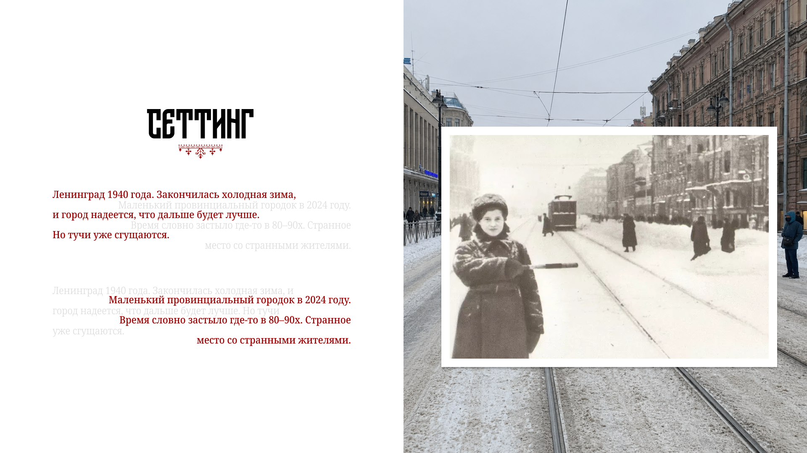
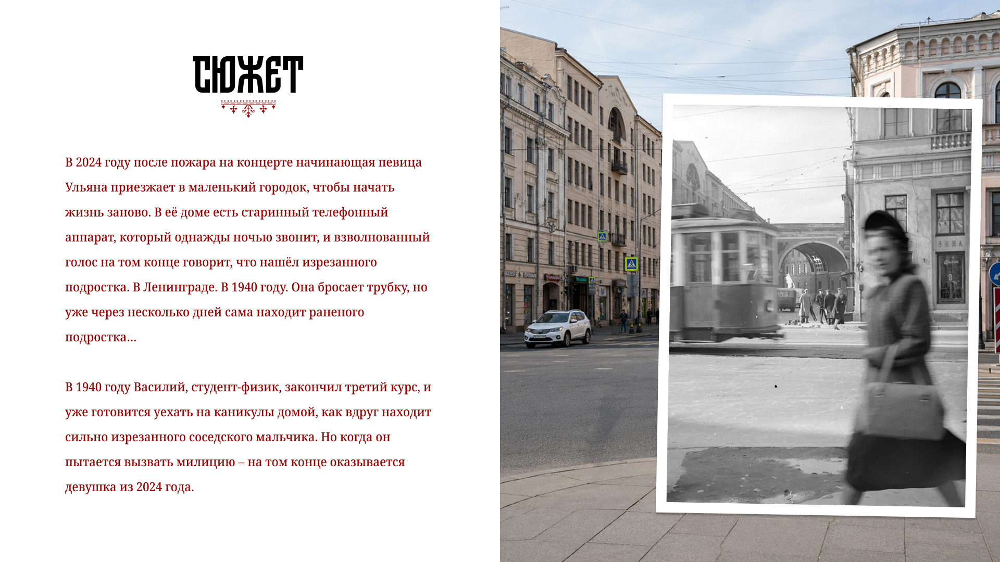
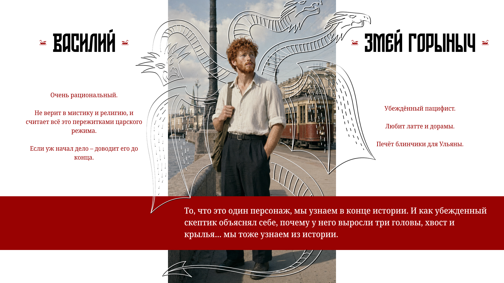
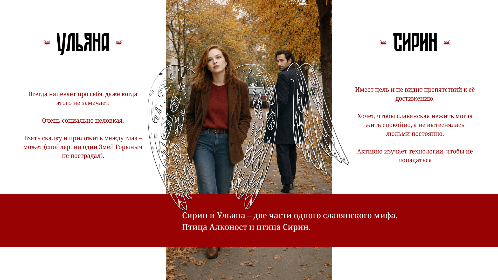
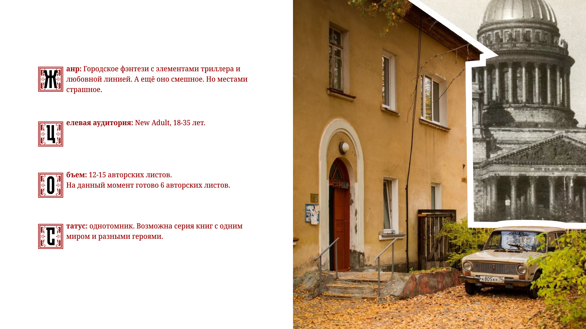

Контекст
Презентация рукописи перед современным издательством похожа на «elevator pitch»: у автора есть 3 минуты и 10 слайдов, чтобы убедить издателя, что книга достойна публикации. Помимо рассказа о сюжете и персонажах, за это время нужно так же озвучить и технические параметры книги — объём, степень готовности, потенциал для сиквелов, — поэтому возможности рассказать об атмосфере, настроении и визуальном стиле книги у автора почти нет.
Задача
Моей задачей как дизайнера презентации было при помощи графических инструментов рассказать о том, о чём не успела бы рассказать писательница.
Решение
Действие произведения происходит в двух городах и двух временах — в Ленинграде перед Великой Отечественной Войной и в провинциальном городке в нашей современности. Чтобы показать эту двойственность, не говоря ни слова, я выбрала коллажирование: цветные цифровые фотографии для современности, и отсканированные плёночные снимки для довоенного Ленинграда. Меня всегда подкупала техника, где старую фотографию держат в кадре, сделанном на том же самом месте, и я наконец-то ею воспользовалась!


Непростому сюжету — непростые герои. Советский студент Василий и начинающая певица Ульяна также являются воплощениями сказочных персонажей: Змея Горыныча и птицы Алконост.

Вторжение сказки в реальность нужно было показать, не объясняя словами, и сделать это без коллажирования, потому что этот изобразительный приём я уже использовала для взаимопроникновения времён. Я выбрала рисование от руки поверх фото — это и отсылка к детскому воображению, способному «дорисовать» крылья кому угодно, и отражение юмористического тона произведения.

Результат
На десяти слайдах получилась презентация с собственным узнаваемым визуальным языком, которая не теряется среди других писательских питчей. Автор пришла уже с готовыми портретами персонажей, созданными при помощи ИИ, но сегодня нагенерить красивые картинки может практически кто угодно — моя задача была собрать из них цельный дизайн, который работает на историю и помогает её запомнить. А заодно я наконец-то всласть поиграла с буквицами, рукописной графикой и вообще позволила себе покайфовать в непривычной для продуктового дизайнера стилистике.
